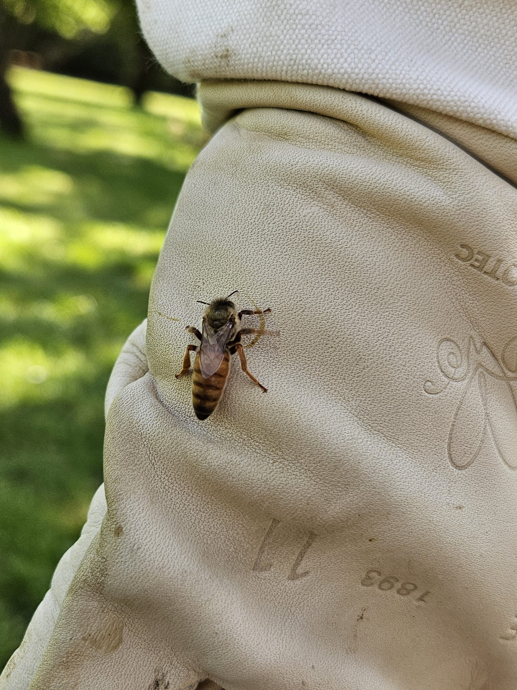
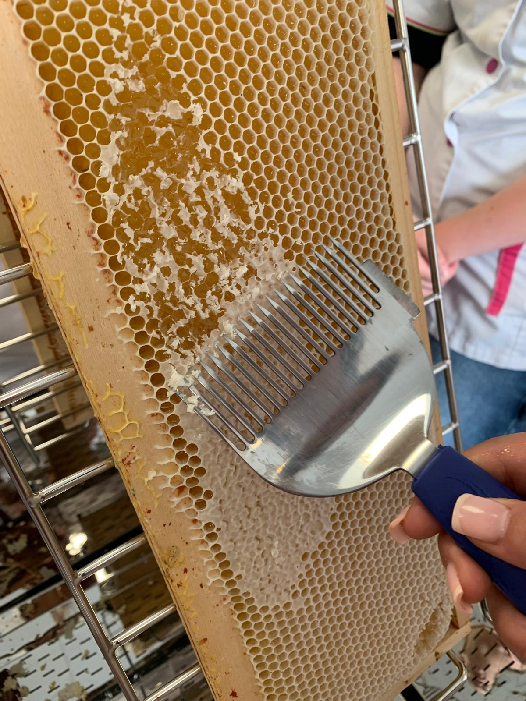
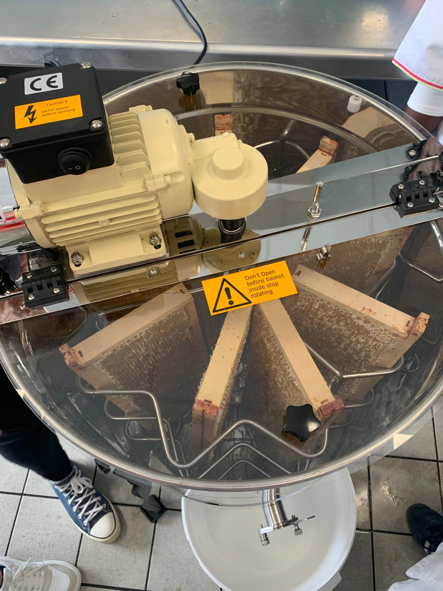
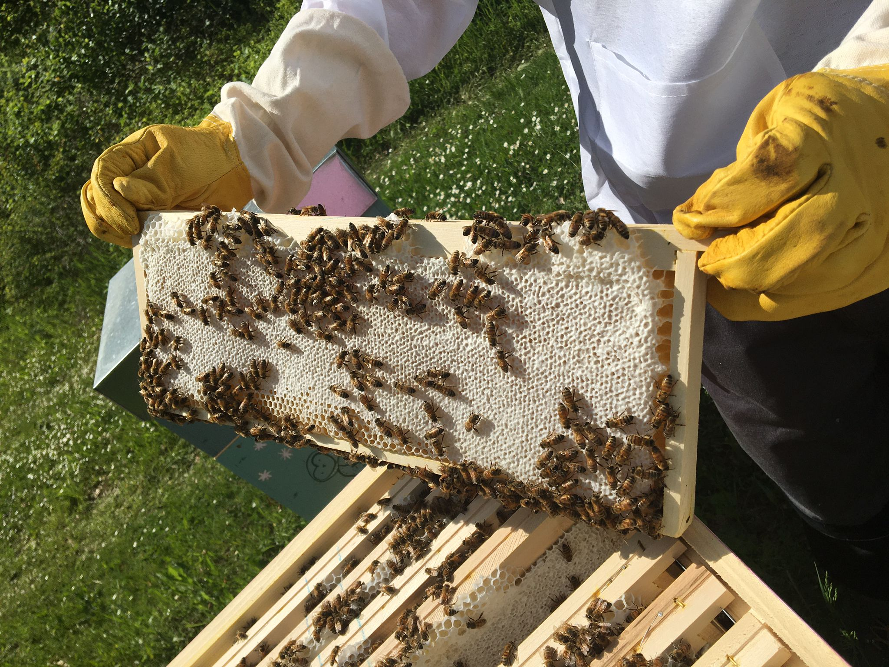

Découvrez en images et vidéos la vie de nos abeilles 🐝, l’extraction du miel 🍯 et les coulisses de La Ruche Gourmande !
Au milieu de mes abeilles 🐝Observation de la reine 👑Un cadre bien rempli de miel doré 🍯Un autre cadre prêt pour l’extractionLa vie intense dans la rucheUne de nos ruches en plein été 🌻Moment d’extraction du mielMiel de printemps clair et délicat 🌸Miel d’été riche et savoureux 🌞

Zoom sur la reine, cœur de la colonie 👑Une belle journée au rucher 🌿Cadre de couvain, l’avenir de la colonie 🐝

Désoperculation avant l’extraction du miel 🔨

Étape d’extraction du miel en douceur 🍯

Un cadre vivant avec les abeilles en action 🐝Mise en pot du miel, prêt à être dégusté 🍯